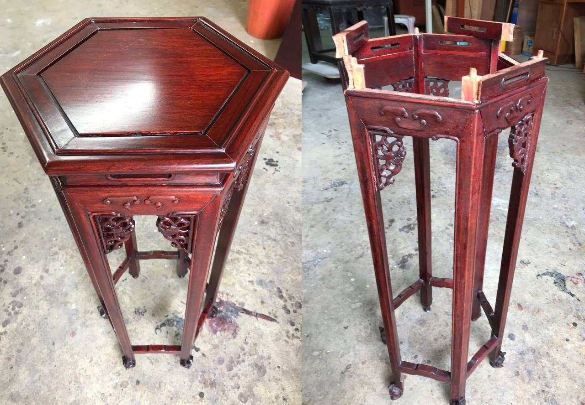

Four Decades of Wood and Craft

Meng Antique was founded in 1985 as an antique furniture dealer, buying and selling rosewood and huanghuali pieces at a time when Chinese heritage furniture was still common in Singapore homes.
Over the years, as fewer craftsmen remained who understood the joinery, carving and lacquer techniques of these pieces, Mr Tan's focus shifted from trading to restoration — bringing broken, faded and neglected heirlooms back to life.
Today, Meng Antique is one of the few workshops in Singapore still practising this craft, trusted by collectors and families to care for furniture that carries generations of history.
Why It's a Dying Craft
Restoring antique Chinese furniture takes patience most modern workshops no longer have — matching old joinery by hand, mixing lacquer to match decades of patina, and repairing carved inlay without machines. Mr Tan learned this craft through years of hands-on work, and continues to pass that care into every piece that comes through the workshop.
Bring Us Your Piece
We'd be glad to take a look and share honest advice on restoring it.
Inquire for a Quote